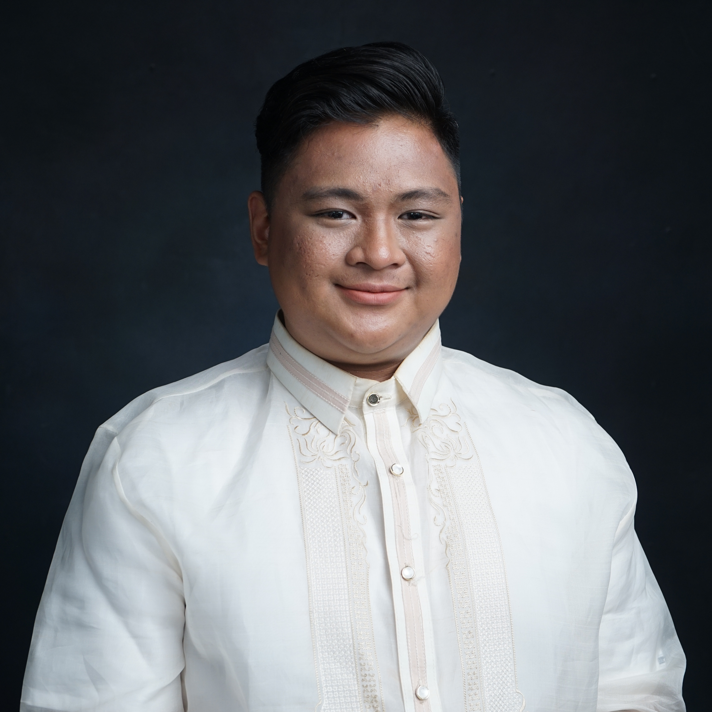

Harmon D. Arciaga

Summary
Quality-oriented professional with years of experience developing literature necessary for business affairs.
Previously worked as a recruiter who is recognized by peers for effective communication and creative thinking skills.
I am currently working as a freelance quality control editor for webcomics at Tapas Entertainment Inc.
Education
- Polytechnic University of the Philippines (2015-2019)
- Bachelor of Secondary Education, Major in English
Work Experience
Freelance Quality Control Editor - Tapas Entertainment
October 2023 - Present
- Specialize in localizing webcomics from Korean to English, ensuring cultural relevance
and narrative integrity.
Edit and proofread content to meet quality standards,
collaborate with artists and writers for consistent voice and style,
and provide
feedback to enhance the localization process while staying updated on industry
trends.
Talent Sourcing Specialist - Bill Gosling Outsourcing
June 2023 - October 2023
- Responsible for managing the full cycle recruitment process in strategically finding the
best talent to join the
organization while driving to reach the teams hiring goals. This
entails sourcing and screening candidates, coordinating
interviews and assessments,
and facilitating offers and employment negotiations, all while ensuring a positive
candidates experience.
Recruiter (APAC) - Nezda Technologies
2022 - 2023
- Identifying future hiring needs and developing job descriptions and specifications.
Attracting suitable candidates
through databases, online employment forums, social
media, etc. and assessing applicants' knowledge, skills, and experience to best suit
open positions.
Customer Service Representative - Telus International Philippines
2021 - 2022
- Providing support for players on both email and chat channels simultaneously
Side Projects
Localization QA - Side
1 month
- Tested and reviewed Tagalog translations of in-game content to ensure accuracy and cultural relevance.
Reported issues using Jira and managed test cases in TestRail. Worked with translators and dev teams to maintain localization quality.
Expertise
- Quality Assurance
- Localization
- Business Writing
- Recruitment
- Talent Sourcing
Certifications
Tech Recruitment Certified Professional
DevSkiller
Issued 2022
Awards
TEAM MALAYSIA'S TOP 1 RECRUITER (TEAM UNDAUNTED)
Nezda Technologies
2023
Connect with me!